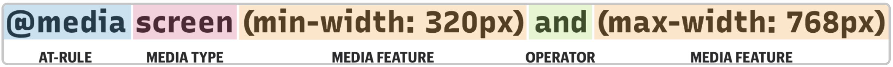

Media queries are arguably one of the most important features offered by CSS as they allow the appearance or even behavior of a website to be altered to match the settings of the user's device, browser or system. There are many different ways to implemenet media queries to change a number of different about a webpage. The most common is to reorganize a page if the width / height gets to small. This is super important when designing a webpage that may be viewed on a moblie device.
/* Desktop Computer */
@media screen and (min-width: 1024px) {
.element {
/* Apply given properties */
}
}
/* Tablet */
@media screen and (min-width: 768px) and (max-width: 1023px) {
.element {
/* Apply given properties */
}
}
/* Moblie Device */
@media screen and (max-width: 767px) {
.element {
/* Apply given properties */
}
}

This code above states that depending on the size of the screen (desktop, tablet or moblie phone), reorganize the elements associated with the .element property in the specified manner. As you can, being able to restructre a webpage to fit the screen size would be a desirable feature for many designers. There is a standard formula for how to set up a media query regardless of what the query will do. Below is a good formula for writing media queries and can be altered to do numerous things:

There are a number of other media queries that are important to include espeically for people who have accessability settings on their devices and/or browsers. Each query detects whether the user settings match the condition and alter the display accordingly. Some examples of media queries for accessability needs include: prefers-reduced-motion, prefers-contrast, inverted-colors and prefers-color-scheme. Each of these has a unique purpose for making your webpage useable for a wide variety of people.
Prefers-Reduced-Motion
Reduced motion settings indicate that the user prefers the least bit of movement in terms of animations and things of that nature. In the media query, you would want to minimize any movement that happens in your webpage. It takes two values: no-preference or reduce.
@media screen and (prefers-reduced-motion: reduce) {
{
/* Very short durations means JavaScript that relies on events still works */
animation-duration: 0.001ms !important;
animation-iteration-count: 1 !important;
transition-duration: 0.001ms !important;
}
}
Prefers-Contrast
When a user indiciates that they prefer contrast, it means that they either want to increase the contrast of the page or decrease it. This query takes three values: no-preference, high, or low. If the user specifies 'high' contrast, you would want to make each of the features stand out from the background a great amount and differ in color immensely. For 'low' contrast, you want to do the opposite and make the feaures blend in more.
@media (prefers-contrast: high) {
/* Changes the button color to something that stands out from the background more */
.button {
background-color: #0a0db7;
}
}
Inverted-Colors
Inverted colors indicates whether a user wants to swap the orginal colors for their opposites to make it easier to read. This can be used as an alternative to a high contrast setting. It can take two values: none or inverted.
@media (inverted-colors) {
img, video {
filter: invert(100%);
}
}
Prefers-Color-Scheme
The last media query that is common for aaccessbility needs is the preferred color scheme. Many websites have the option to transition between a light mode and a dark monde. This is useful when using your laptop in the dark / at night and the light mode can be too aggressive. It takees two values: light or dark. Typically, a webiste's default is their light mode and their dark mode is activated when applicable. It makes it easier to declare the things that will change was variables (var) and the access them in the manner shown below:
body {
--bg-color: white;
--text-color: black;
background-color: var(--bg-color);
color: var(--text-color);
}
@media screen and (prefers-color-scheme: light) {
body {
--bg-color: black;
--text-color:white;
}
}
References
CSS Tricks: Media Queries